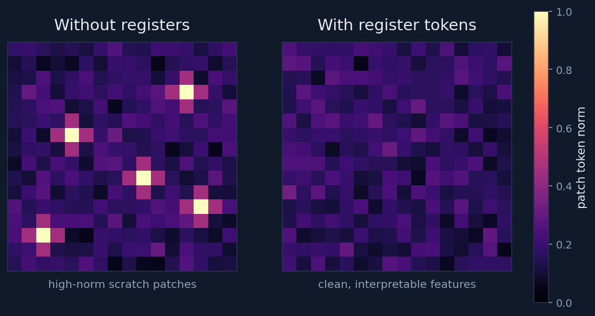
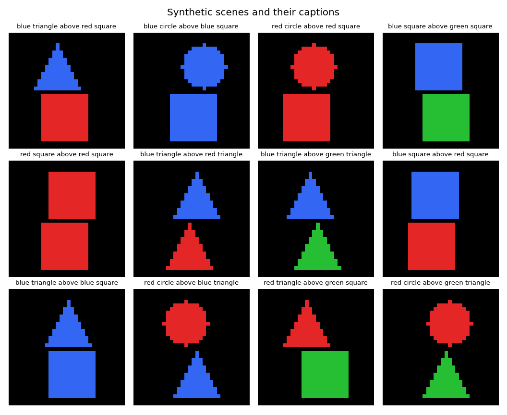
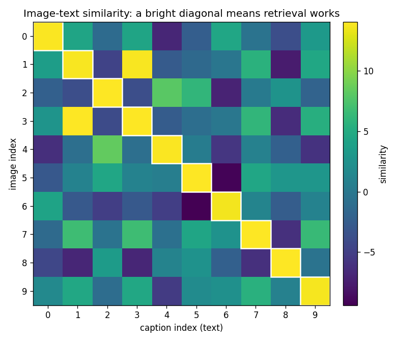

<!-- .slide: id="title" class="section-divider" data-state="is-section-divider" --> # LLMs 0 to 100 Module 8: Multimodal Models Beyond text sequences --- <!-- .slide: id="review-post-training" --> ## Review: Where Module 7 Left Us The modern stack so far: - **Pretraining** gives broad capability - **SFT** teaches instruction-following - **RL** / preference optimization shapes behavior with scalar feedback <div class="slide-columns" style="grid-template-columns: repeat(2, 1fr); gap: 34px;"> <div> **Unchanged since Modules 3-4** - Embeddings enter a sequence model - **Attention** mixes information - **Logits** predict the next token - **Gradients** update weights </div> <div> **What changes now** - The **input space** - Images, audio, video, and sensor streams must become representations the model can use </div> </div> This module's question: **how do we turn non-text data into tokens or embeddings that live beside words?** <!-- .element: class="text-lg" style="margin-top: 12px;" --> --- <!-- .slide: id="review-callback" --> ## Review: The Through-Line Still Holds Module 5: **next-token pretraining**. Module 6: **response format**. Module 7: **behavior from feedback**. Module 8 adds **perceptual conditions** to the context. <div class="slide-columns" style="grid-template-columns: repeat(2, 1fr); gap: 34px;"> <div> **Reused wholesale** - The Module 4 transformer, unchanged - Cross-entropy and the masked SFT loss of Modules 5 and 6 - The same SFT, preference, and RLHF post-training of Module 7 </div> <div> **Newly hard** - **Reward and evaluation** - Visual and audio mistakes can be subtle, spatial, temporal, or safety-critical </div> </div> --- <!-- .slide: id="divider-what" class="section-divider" data-state="is-section-divider" --> # What Multimodal Means Connecting language to perception --- <!-- .slide: id="what-modality" --> ## A Modality Is a Type of Signal - A **modality** is a signal with its own structure: text, image, audio, video, depth, sensor readings, code-execution traces - A **multimodal model** connects two or more in one system <div class="card-grid cols-2"> <div class="card"><h4>Understanding</h4><p>Condition on an image, clip, video, or document and answer in <strong>text</strong>.</p></div> <div class="card"><h4>Retrieval</h4><p>Match images to captions, speech to transcripts, screenshots to descriptions.</p></div> <div class="card"><h4>Action</h4><p>Perceive a state, decide, and call a tool, control a robot, or drive a UI.</p></div> </div> Main object: the **multimodal LLM**, a language model whose context includes non-text representations interleaved with text tokens. <!-- .element: class="text-lg" --> --- <!-- .slide: id="what-why" --> ## Why It Matters Many real tasks connect **language to perception**: - Read a chart, debug a screenshot, describe a medical image - Transcribe speech, understand a lecture video, use a computer The unifying abstraction: **every modality gets compressed into a sequence**, either - **discrete tokens** (text tokens, audio codec tokens), or - continuous **embedding vectors** (image patch features projected into the LLM's hidden size) The recipe: **choose a representation, align it with language, train the model to use it.** <!-- .element: class="text-lg" style="margin-top: 10px;" --> --- <!-- .slide: id="what-tensions" --> ## Two Tensions That Shape Everything <div class="slide-columns" style="grid-template-columns: repeat(2, 1fr); gap: 34px;"> <div> **Bandwidth** - Text: symbolic, low-bandwidth - Pixels and waveforms: continuous, high-bandwidth - One high-resolution image or one minute of audio dwarfs a 1,000-token paragraph </div> <div> **Order** - Language: ordered left to right - Images: 2-D layout. Audio: fine-grained time. Video: both - Flattening into a sequence throws away structure unless positional information restores it </div> </div> The whole module answers these two tensions: **compress the high-bandwidth signal, keep its structure once flattened.** <!-- .element: class="text-lg" style="margin-top: 12px;" --> --- <!-- .slide: id="divider-tokenization" class="section-divider" data-state="is-section-divider" --> # Images Are Not Words Visual tokenization --- <!-- .slide: id="tok-raw" --> ## Start With the Raw Object An image is a **tensor**, usually $H \times W \times C$, not a list of words. <div class="slide-columns" style="grid-template-columns: repeat(2, 1fr); gap: 34px;"> <div> **What makes images different** - Neighboring pixels matter - Two-dimensional position matters - Small translations often should *not* change the meaning </div> <div> **Two recipes** - **CNNs** build local edge and texture features with sliding filters (the older computer-vision path) - **Transformers** treat an image as a **sequence of patches** (the recipe that unified vision with language models) </div> </div> To feed an image to a transformer, cut it into a sequence. <!-- .element: class="text-lg" style="margin-top: 12px;" --> --- <!-- .slide: id="fig-dosovitskiy" --> <div class="figure-card">  <div class="figure-info"> ## Alexey Dosovitskiy and the ViT team <!-- .element: class="fragment fade-in" --> <div class="fragment fade-in"> ### An Image is Worth 16x16 Words: Transformers for Image Recognition at Scale (ViT, Google Research, 2020) - Split the image into fixed patches and treated each one as a token - With enough training data, a plain transformer matches or beats convolutional networks - The rest of the module builds on this framing </div> </div> </div> --- <section id="tok-patchify"> <div class="video-container"> <video class="manim-stepper" data-manim-scene="patchify" preload="auto"></video> </div> </section> --- <!-- .slide: id="tok-math" --> ## The Arithmetic of Patches Split the image into non-overlapping $P \times P$ patches. The number of visual tokens is $$N = \frac{H}{P} \cdot \frac{W}{P}$$ A $224 \times 224$ image with $16 \times 16$ patches gives $\textcolor{#4a9eff}{196}$ patch tokens. Each patch is projected, the visual analog of a token embedding: $$z_i = W_{\text{patch}}\ \mathrm{flatten}(p_i) + b_{\text{patch}}$$ - Smaller patches: more detail, more tokens - Attention cost grows with the **square** of sequence length (Module 4) --- <!-- .slide: id="tok-position-resolution" --> ## Position and Resolution Are Not Optional <div class="slide-columns" style="grid-template-columns: repeat(2, 1fr); gap: 34px;"> <div> **Position embeddings** - Flattening to 1-D **throws away layout** - Row/column positions let the model tell "top" from "bottom" </div> <div> **Resolution** - Many tasks live in **fine detail**: small text, tick labels, tiny objects, medical findings - If the relevant pixels were never represented, the model fails </div> </div> A model can be "looking at" the image and still be blind to the part that matters. <!-- .element: class="text-lg" style="margin-top: 12px;" --> --- <!-- .slide: id="sq-registers" --> ## Side Quest: Vision Transformers Need Registers <div class="img-figure"> <p></p> </div> - Some ViTs hijack a few patches as high-norm scratch space (left) - **Register tokens** add dedicated slots for that global computation, cleaning up the dense features (right) - Attention over patches does not guarantee every patch token has a readable meaning Darcet et al., "Vision Transformers Need Registers," <a href="https://arxiv.org/abs/2309.16588">arXiv:2309.16588</a> <!-- .element: class="text-lg" style="margin-top: 6px;" --> --- <!-- .slide: id="divider-clip" class="section-divider" data-state="is-section-divider" --> # CLIP Contrastive image-text pretraining --- <!-- .slide: id="fig-radford-clip" --> <div class="figure-card">  <div class="figure-info"> ## Alec Radford and the CLIP team <!-- .element: class="fragment fade-in" --> <div class="fragment fade-in"> ### Learning Transferable Visual Models From Natural Language Supervision (CLIP, OpenAI, 2021) - Aligned images and text in one shared embedding space with **natural-language supervision** - Learned from 400M noisy web image-caption pairs, not a hand-labeled class list - Generalized zero-shot to tasks it was never explicitly trained on </div> </div> </div> --- <!-- .slide: id="clip-architecture" --> ## CLIP Learns a Shared Space, Not Language CLIP **does not generate language**. It only learns where images and text sit relative to each other. <div class="slide-columns" style="grid-template-columns: repeat(2, 1fr); gap: 34px;"> <div> **Two encoders** - **Image encoder**: image to vector - **Text encoder**: caption to vector </div> <div> **One objective** - Pull **matched** image-text pairs together - Push **mismatched** pairs apart </div> </div> Result: an **alignment foundation**, a coordinate system where "a photo of a dog" lands near pictures of dogs. <!-- .element: class="text-lg" style="margin-top: 12px;" --> --- <!-- .slide: id="clip-matrix" --> ## The Batch Is the Supervision For a batch of $B$ image-caption pairs, compute a $B \times B$ similarity matrix: $$s_{ij} = \frac{\langle \hat{v}_i, \hat{t}_j \rangle}{\tau}$$ <div class="diagram"><svg viewBox="0 0 430 320" width="430" role="img" aria-label="4 by 4 image-text similarity matrix; rows are image thumbnails, columns are captions, the matched diagonal is highlighted"> <text x="278" y="16" fill="#8fa0bd" font-size="12" text-anchor="middle">captions</text> <text x="14" y="182" fill="#8fa0bd" font-size="12" text-anchor="middle" transform="rotate(-90 14 182)">images</text> <g text-anchor="middle" fill="#e8eaf0" font-size="11"><text x="182" y="34">T1</text><text x="246" y="34">T2</text><text x="310" y="34">T3</text><text x="374" y="34">T4</text></g> <g text-anchor="middle" font-size="9.5" fill="#c7d0e0"><text x="182" y="47">red</text><text x="182" y="58">square</text><text x="246" y="47">blue</text><text x="246" y="58">circle</text><text x="310" y="47">green</text><text x="310" y="58">triangle</text><text x="374" y="47">red</text><text x="374" y="58">circle</text></g> <g><rect x="80" y="86" width="24" height="24" fill="#e05252"/><circle cx="92" cy="154" r="12" fill="#4a9eff"/><polygon points="92,197 79,221 105,221" fill="#50c878"/><circle cx="92" cy="266" r="12" fill="#e05252"/></g> <g text-anchor="middle" fill="#e8eaf0" font-size="11"><text x="122" y="102">I1</text><text x="122" y="158">I2</text><text x="122" y="214">I3</text><text x="122" y="270">I4</text></g> <g stroke="#2a3550" stroke-width="1.5"> <rect x="150" y="70" width="64" height="56" fill="#50c878"/><rect x="214" y="70" width="64" height="56" fill="#1b2436"/><rect x="278" y="70" width="64" height="56" fill="#1b2436"/><rect x="342" y="70" width="64" height="56" fill="#1b2436"/> <rect x="150" y="126" width="64" height="56" fill="#1b2436"/><rect x="214" y="126" width="64" height="56" fill="#50c878"/><rect x="278" y="126" width="64" height="56" fill="#1b2436"/><rect x="342" y="126" width="64" height="56" fill="#1b2436"/> <rect x="150" y="182" width="64" height="56" fill="#1b2436"/><rect x="214" y="182" width="64" height="56" fill="#1b2436"/><rect x="278" y="182" width="64" height="56" fill="#50c878"/><rect x="342" y="182" width="64" height="56" fill="#1b2436"/> <rect x="150" y="238" width="64" height="56" fill="#1b2436"/><rect x="214" y="238" width="64" height="56" fill="#1b2436"/><rect x="278" y="238" width="64" height="56" fill="#1b2436"/><rect x="342" y="238" width="64" height="56" fill="#50c878"/> </g> </svg></div> Rows are images, columns are captions. The **diagonal** is the matched pairs: maximize it, minimize everything off it. <!-- .element: class="text-lg" --> --- <!-- .slide: id="clip-loss" --> ## The Loss Is Cross-Entropy You Already Know The contrastive loss is **two** cross-entropies over the similarity matrix, one per direction: $$\mathcal{L} = \tfrac{1}{2}\left( \mathrm{CE}(\text{image} \to \text{text}) + \mathrm{CE}(\text{text} \to \text{image}) \right)$$ <div class="slide-columns" style="grid-template-columns: repeat(2, 1fr); gap: 34px;"> <div> **Same math, new classes** - The cross-entropy of Modules 2 and 5 - The "classes" are the **other examples in the batch**, not vocabulary tokens </div> <div> **The target** - Row $i$: correct class is caption $i$ - Column $j$: correct class is image $j$ - The question: *"which caption belongs with this image?"* </div> </div> Larger batches: **harder negatives**, sharper embedding space. <!-- .element: class="text-lg" style="margin-top: 12px;" --> --- <!-- .slide: id="clip-zeroshot" --> ## Zero-Shot Classification Falls Out for Free CLIP has no classifier head, yet it can classify: 1. Write **one text prompt per class**: "a photo of a cat", "a photo of a dog", … 2. **Embed** each prompt and embed the image 3. Pick the class prompt with the **highest similarity** - The "classifier" is just more text: swap the prompts, get a new classifier, no retraining - Noisy but abundant captions teach categories, attributes, styles, and concepts without a hand-labeled class list --- <!-- .slide: id="clip-limits" --> ## What CLIP Is Not CLIP aligns **global** image and text embeddings. That is all. <div class="card-grid cols-2"> <div class="card"><h4>It cannot, by itself</h4><p>Produce detailed answers, follow instructions, count reliably, localize objects precisely, or reason over multiple images.</p></div> <div class="card"><h4>What it is</h4><p>An <strong>alignment foundation</strong>: a shared space to build on, not a full visual assistant.</p></div> </div> An assistant needs the language model to **condition on visual information while it generates**. Next section. <!-- .element: class="text-lg" --> --- <!-- .slide: id="sq-weak-supervision" --> ## Side Quest: Why Captions Are Weak Supervision - A caption rarely names every object, relation, style, and spatial detail: "a dog" ignores the breed, the grass, the ball in its mouth - Contrastive learning still works: **scale and diversity** create useful pressure across millions of pairs - The cost: **caption bias**, missing whatever the captions systematically leave out Weak, abundant supervision beats strong, scarce supervision. A recurring theme across web-scale pretraining. <!-- .element: class="text-lg" style="margin-top: 10px;" --> --- <!-- .slide: id="divider-bridge" class="section-divider" data-state="is-section-divider" --> # Connecting Vision to Language The bridge --- <!-- .slide: id="bridge-recipe" --> ## The Stitched Recipe: Three Pieces The language model must **condition on an image while generating text autoregressively**. The cascaded recipe bolts together three parts: <div class="diagram"><svg viewBox="0 0 1000 210" width="1000" role="img" aria-label="pipeline: image to vision encoder to connector to language model to text, with each arrow labeled by what flows"> <g text-anchor="middle"> <rect x="15" y="80" width="110" height="70" rx="8" fill="#1b2436" stroke="#4a9eff" stroke-width="2"/><text x="70" y="110" fill="#e8eaf0" font-size="14">Image</text><text x="70" y="130" fill="#8fa0bd" font-size="11">H x W x C</text> <rect x="200" y="80" width="150" height="70" rx="8" fill="#1b2436" stroke="#f5a623" stroke-width="2"/><text x="275" y="110" fill="#e8eaf0" font-size="14">Vision encoder</text><text x="275" y="130" fill="#8fa0bd" font-size="11">pixels to features</text> <rect x="425" y="80" width="150" height="70" rx="8" fill="#1b2436" stroke="#50c878" stroke-width="2"/><text x="500" y="110" fill="#e8eaf0" font-size="14">Connector</text><text x="500" y="130" fill="#8fa0bd" font-size="11">features to LLM width</text> <rect x="650" y="80" width="160" height="70" rx="8" fill="#1b2436" stroke="#4a9eff" stroke-width="2"/><text x="730" y="106" fill="#e8eaf0" font-size="14">Language model</text><text x="730" y="126" fill="#8fa0bd" font-size="11">attends over all vectors</text> <rect x="885" y="80" width="100" height="70" rx="8" fill="#1b2436" stroke="#a06bd4" stroke-width="2"/><text x="935" y="115" fill="#e8eaf0" font-size="14">Text</text></g> <g stroke="#8fa0bd" stroke-width="2" fill="none" marker-end="url(#ah8)"><line x1="125" y1="115" x2="197" y2="115"/><line x1="350" y1="115" x2="422" y2="115"/><line x1="575" y1="115" x2="647" y2="115"/><line x1="810" y1="115" x2="882" y2="115"/></g> <g text-anchor="middle" fill="#c7d0e0" font-size="10.5"><text x="161" y="66">raw</text><text x="161" y="78">pixels</text><text x="386" y="66">patch</text><text x="386" y="78">features</text><text x="611" y="66">LLM-width</text><text x="611" y="78">vectors</text><text x="846" y="66">next-token</text><text x="846" y="78">logits</text></g> <g text-anchor="middle" font-size="11" fill="#6f7f9c"><text x="70" y="172">input</text><text x="935" y="172">output</text></g> <defs><marker id="ah8" markerWidth="9" markerHeight="9" refX="7" refY="4.5" orient="auto"><path d="M0,0 L9,4.5 L0,9 Z" fill="#8fa0bd"/></marker></defs> </svg></div> The vision encoder is often **pretrained separately** (like CLIP). The connector and how the LLM reads visual features are the new work. <!-- .element: class="text-lg" --> --- <!-- .slide: id="bridge-projector" --> ## The Simplest Connector Is a Linear Projector Map each visual feature $h_i$ into the LLM's token-embedding width: $$u_i = W_{\text{proj}}\ h_i + b_{\text{proj}}$$ Then **prepend** the projected vectors ahead of the text: <div class="diagram"><svg viewBox="0 0 920 175" width="900" role="img" aria-label="visual feature projected by W_proj into an LLM-width vector, then prepended in front of the text tokens"> <g text-anchor="middle"><rect x="20" y="60" width="66" height="60" rx="6" fill="#1b2436" stroke="#4a9eff" stroke-width="2"/><text x="53" y="86" fill="#e8eaf0" font-size="14">h_i</text><text x="53" y="103" fill="#8fa0bd" font-size="10">vision space</text> <rect x="150" y="55" width="86" height="70" rx="6" fill="#1b2436" stroke="#50c878" stroke-width="2"/><text x="193" y="85" fill="#e8eaf0" font-size="14">W_proj</text><text x="193" y="103" fill="#8fa0bd" font-size="10">linear</text> <rect x="300" y="60" width="66" height="60" rx="6" fill="#1b2436" stroke="#a06bd4" stroke-width="2"/><text x="333" y="86" fill="#e8eaf0" font-size="14">u_i</text><text x="333" y="103" fill="#8fa0bd" font-size="10">LLM width</text></g> <g stroke="#8fa0bd" stroke-width="2" fill="none" marker-end="url(#ahp)"><line x1="86" y1="90" x2="147" y2="90"/><line x1="236" y1="90" x2="297" y2="90"/><line x1="366" y1="90" x2="432" y2="90"/></g> <text x="399" y="80" fill="#c7d0e0" font-size="10.5" text-anchor="middle">prepend</text> <g text-anchor="middle" font-size="13"><rect x="440" y="62" width="52" height="56" rx="5" fill="#12331f" stroke="#50c878" stroke-width="2"/><text x="466" y="94" fill="#e8eaf0">u_1</text><rect x="497" y="62" width="52" height="56" rx="5" fill="#12331f" stroke="#50c878" stroke-width="2"/><text x="523" y="94" fill="#e8eaf0">u_k</text><rect x="566" y="62" width="52" height="56" rx="5" fill="#1b2436" stroke="#4a9eff" stroke-width="2"/><text x="592" y="94" fill="#e8eaf0">e_1</text><rect x="623" y="62" width="52" height="56" rx="5" fill="#1b2436" stroke="#4a9eff" stroke-width="2"/><text x="649" y="94" fill="#e8eaf0">e_2</text><rect x="680" y="62" width="52" height="56" rx="5" fill="#1b2436" stroke="#4a9eff" stroke-width="2"/><text x="706" y="94" fill="#e8eaf0">e_3</text></g> <g text-anchor="middle" font-size="11"><text x="529" y="52" fill="#50c878">visual prefix</text><text x="649" y="52" fill="#4a9eff">text tokens</text></g> <defs><marker id="ahp" markerWidth="9" markerHeight="9" refX="7" refY="4.5" orient="auto"><path d="M0,0 L9,4.5 L0,9 Z" fill="#8fa0bd"/></marker></defs> </svg></div> The LLM never learns whether the first vectors came from words or pixels. Attention mixes vectors; a visual prefix is just a prefix the text attends back to. <!-- .element: class="text-lg" style="margin-top: 10px;" --> --- <!-- .slide: id="bridge-loss" --> ## The Loss Is Still Next-Token Prediction Training is **causal next-token prediction over the text response**, now conditioned on the image: $$\mathcal{L} = -\frac{1}{|R|}\sum_{t \in R}\log p_\theta\left(x_t \mid \textcolor{#f5a623}{\text{image}}, x_{<t}\right)$$ - **Module 6's masked SFT loss**: score only the response tokens $R$ - New: an image condition in the context - The transformer is unchanged; we added vectors to the front of the sequence and kept the same objective --- <!-- .slide: id="bridge-variants" --> ## Four Ways to Build the Bridge <div class="taxonomy-table"> <table> <thead><tr><th>Approach</th><th>Idea</th><th>Who</th></tr></thead> <tbody> <tr><td><strong>LLaVA projector</strong></td><td>Frozen vision encoder, project features into the LLM, instruction-tune on image dialogue</td><td>Liu et al.</td></tr> <tr><td><strong>BLIP-2 Q-Former</strong></td><td>Learn a small set of query tokens that <em>extract</em> the useful visual information first</td><td>Li et al.</td></tr> <tr><td><strong>Flamingo cross-attn</strong></td><td>Keep the LLM mostly intact; insert cross-attention layers that attend to visual features</td><td>Alayrac et al.</td></tr> <tr><td><strong>Early fusion</strong></td><td>Tokenize every modality into one shared sequence; train a single transformer over all of it</td><td>Chameleon, others</td></tr> </tbody> </table> </div> They differ in **how much of the stack is trained** and **where the visual information enters**. All four end at a transformer predicting the next text token. <!-- .element: class="text-lg" --> --- <!-- .slide: id="fig-flamingo-blip" --> <div class="figure-card">  <div class="figure-info"> ## Jean-Baptiste Alayrac and the Flamingo team <!-- .element: class="fragment fade-in" --> <div class="fragment fade-in"> ### Flamingo: a Visual Language Model for Few-Shot Learning (DeepMind, 2022) - Connected **frozen** language models to visual inputs with gated cross-attention - Learns few-shot from a handful of interleaved image-text examples in context - <a href="https://arxiv.org/abs/2204.14198">arXiv:2204.14198</a> </div> </div> </div> --- <!-- .slide: id="fig-blip2" --> <div class="figure-card">  <div class="figure-info"> ## Junnan Li and collaborators <!-- .element: class="fragment fade-in" --> <div class="fragment fade-in"> ### BLIP-2: Bootstrapping Language-Image Pre-training with Frozen Encoders and LLMs (Salesforce Research, 2023) - Introduced the **Q-Former**: a lightweight bridge that queries a frozen image encoder - Hands a compact set of vectors to a frozen LLM, so neither large model is retrained - Strong results at a fraction of the training cost — <a href="https://arxiv.org/abs/2301.12597">arXiv:2301.12597</a> </div> </div> </div> --- <!-- .slide: id="fig-llava" --> <div class="figure-card">  <div class="figure-info"> ## Haotian Liu, Chunyuan Li, Yuheng Li, and Yong Jae Lee <!-- .element: class="fragment fade-in" --> <div class="fragment fade-in"> ### Visual Instruction Tuning (LLaVA, 2023) - Popularized **visual instruction tuning**: a simple projector from a frozen CLIP vision encoder into an LLM - Finetuned on image-dialogue data, much of it generated by a stronger model - Cheap, effective, and the template this module's exercise follows — <a href="https://arxiv.org/abs/2304.08485">arXiv:2304.08485</a> </div> </div> </div> --- <!-- .slide: id="bridge-stitched-native" --> ## Stitched vs Native A main architecture shift of 2024–2025. <div class="compare-table"> <table> <thead><tr><th>Stitched (cascaded)</th><th>Natively multimodal</th></tr></thead> <tbody> <tr><td>Bolt together strong pretrained parts: an encoder, a projector or cross-attention bridge, and an LLM</td><td>Train the modality interface and the core model <strong>together</strong>, often end to end across text, image, audio, video</td></tr> <tr><td>Modular, cheaper, easy to debug</td><td>The old voice stack was speech→text, a text model, then text→speech; <strong>GPT-4o</strong> was trained as one model across text, vision, audio</td></tr> <tr><td>The LLM never learned every modality from the start</td><td>The model learns the modalities together rather than inheriting a frozen text-only core</td></tr> </tbody> </table> </div> "Native" does not mean raw pixels into attention. Real systems still use learned front ends (patching, conv stems, spectrograms, audio codecs). The difference: those front ends are **trained as part of one model**. <!-- .element: class="text-lg" --> --- <!-- .slide: id="bridge-projector-matters" --> ## The Projector Is Small but Not Trivial <div class="slide-columns" style="grid-template-columns: repeat(2, 1fr); gap: 34px;"> <div> **Why it looks trivial** - Often a single linear layer - A few hundred thousand parameters against a multi-billion-parameter LLM </div> <div> **Why it is not** - It learns a **coordinate transformation** from vision-feature space to LLM language space - A bad projector makes a strong vision encoder **useless** to the LLM </div> </div> Tradeoff: **freezing** large encoders is cheaper and more stable; **jointly tuning** more of the stack can improve alignment at higher cost. <!-- .element: class="text-lg" style="margin-top: 12px;" --> The exercise builds this bridge: project a tiny image embedding into NanoGPT's hidden size, train it to caption. <!-- .element: class="text-lg" --> --- <!-- .slide: id="divider-sft" class="section-divider" data-state="is-section-divider" --> # Instruction Tuning and Grounding Teaching assistant behavior --- <!-- .slide: id="sft-interleaved" --> ## Interleaved Documents Alignment gives matching, **not** assistant behavior. Modern pretraining adds **interleaved image-text documents**: web pages, papers, manuals, notebooks. <div class="slide-columns" style="grid-template-columns: repeat(2, 1fr); gap: 34px;"> <div> **A caption teaches** Global matching: this whole image goes with this whole sentence. </div> <div> **A document teaches reference** - "The **second** diagram," "**this** chart," "the example **above**" - The data shape needed to reason across **multiple** images </div> </div> --- <!-- .slide: id="sft-unit" --> ## The Instruction-Tuning Unit After alignment, the data unit is an **image plus a prompt-response pair**: - "What color is the triangle?" - "Read the axis label." - "Describe the error message in this screenshot." - "Which object is left of the chair?" Chat templates gain a **placeholder** for the non-text input: ```text <|user|> <image> What color is on top? <|end|> <|assistant|> red <|end|> ``` `<image>` is **not** the image. The wrapper replaces it with the projected visual embeddings from the last section. <!-- .element: class="text-lg" style="margin-top: 8px;" --> --- <!-- .slide: id="sft-data-sources" --> ## Where the Data Comes From <div class="card-grid cols-3"> <div class="card"><h4>Captions and alt text</h4><p>Broad image-language alignment</p></div> <div class="card"><h4>Interleaved documents</h4><p>PDFs, notebooks, manuals — multi-image context</p></div> <div class="card"><h4>Visual QA</h4><p>Targeted answers to specific questions</p></div> <div class="card"><h4>OCR and documents</h4><p>Reading text, forms, and layout in images</p></div> <div class="card"><h4>Referring expressions</h4><p>Locating objects named by language</p></div> <div class="card"><h4>Synthetic dialogue</h4><p>Generated by a stronger model, filtered, then finetuned — echoing Module 6</p></div> </div> The synthetic route repeats Module 6: a stronger model writes the training data, a filter keeps the good parts. <!-- .element: class="text-lg" --> --- <!-- .slide: id="sft-grounding" --> ## Grounding: Words to the Right Pixels **Grounding**: connect words to the right parts of the input. "The red square" should refer to *the red square in this image*, not to red squares being common in the dataset. The stress test is **spatial language**: <div class="card-grid cols-4"> <div class="card"><p>left / right</p></div> <div class="card"><p>above / below</p></div> <div class="card"><p>inside / outside</p></div> <div class="card"><p>count</p></div> <div class="card"><p>same / different</p></div> <div class="card"><p>nearest / farthest</p></div> </div> Trivial for humans; they expose whether the model **uses visual layout** or guesses from language patterns. <!-- .element: class="text-lg" --> --- <!-- .slide: id="sft-failure-modes" --> ## Two Failure Modes <div class="slide-columns" style="grid-template-columns: repeat(2, 1fr); gap: 34px;"> <div> **OCR is separate from recognition** - A model can recognize **objects** yet fail to **read** small text - Or read the text but misunderstand the **layout** of a form, chart, or UI </div> <div> **Visual hallucination** - The multimodal analog of text hallucination - The model **confidently describes** objects, text, colors, or relationships **not present** in the image </div> </div> Instruction tuning makes the model more helpful. It can also teach **shortcut behavior**. <!-- .element: class="text-lg" style="margin-top: 12px;" --> --- <!-- .slide: id="sft-shortcuts" --> ## The Language-Prior Shortcut If training answers carry **strong language priors**, the model learns to answer from **text patterns**, not the image. - If 90% of "what color is the banana?" answers are "yellow," a model scores well without looking - Defense: **controlled data**. Balance the answers so language alone cannot solve the task - Then a correct answer is **evidence the image was used** The exercise uses synthetic, **balanced** scenes for this reason: every color and shape is equally likely, so only reading the image answers "what color is on top?" <!-- .element: class="text-lg" style="margin-top: 10px;" --> --- <!-- .slide: id="sq-ocr-trap" --> ## Side Quest: The OCR Trap The answer depends on a **tiny** word or axis label. The model gets it wrong. Which failure was it? <div class="card-grid cols-4"> <div class="card"><h4>Reasoning</h4><p>It read everything but reasoned wrongly</p></div> <div class="card"><h4>Perception</h4><p>It never encoded the relevant region</p></div> <div class="card"><h4>Resolution</h4><p>Resizing erased the pixels entirely</p></div> <div class="card"><h4>OCR</h4><p>It saw the text but misread the characters</p></div> </div> Each has a **different fix**. Calling every visual mistake a "reasoning failure" hides that the model may never have had the information. <!-- .element: class="text-lg" --> --- <!-- .slide: id="divider-beyond" class="section-divider" data-state="is-section-divider" --> # Beyond Still Images Audio, speech, video, and sensors --- <!-- .slide: id="beyond-audio" --> ## Audio Begins as a Waveform A waveform is a **sequence of amplitude values**, thousands per second. Too raw and too long to feed directly, so we re-represent it: <div class="card-grid cols-3"> <div class="card"><h4>Spectrograms</h4><p>Time-frequency images the model can patch like a picture</p></div> <div class="card"><h4>Learned embeddings</h4><p>Continuous features from an audio encoder</p></div> <div class="card"><h4>Codec tokens</h4><p>Discrete codebook entries — audio as a token sequence</p></div> </div> Same pattern as images: **compress the high-bandwidth signal into a sequence**, discrete or continuous. <!-- .element: class="text-lg" --> --- <!-- .slide: id="beyond-speech" --> ## Speech, Several Ways <div class="taxonomy-table"> <table> <thead><tr><th>Framing</th><th>Maps</th></tr></thead> <tbody> <tr><td><strong>ASR</strong> (recognition)</td><td>audio → text</td></tr> <tr><td><strong>TTS</strong> (synthesis)</td><td>text → audio</td></tr> <tr><td><strong>Speech-language model</strong></td><td>speech → text or speech</td></tr> <tr><td><strong>Spoken assistant</strong></td><td>handles content <em>and</em> paralinguistics: timing, tone, speaker turns</td></tr> </tbody> </table> </div> A spoken assistant models more than the words: **how** something is said carries meaning too. <!-- .element: class="text-lg" --> --- <!-- .slide: id="fig-whisper" --> <div class="figure-card">  <div class="figure-info"> ## Alec Radford and the Whisper team <!-- .element: class="fragment fade-in" --> <div class="fragment fade-in"> ### Robust Speech Recognition via Large-Scale Weak Supervision (Whisper, OpenAI, 2022) - Trained speech recognition on 680,000 hours of noisy, multilingual web audio - Reached robust transcription without a small, clean, hand-labeled corpus - The same lesson as CLIP: weak, abundant supervision at scale wins </div> </div> </div> --- <!-- .slide: id="beyond-video" --> ## Video Adds a Time Axis - **Sample frames**, often sparsely - Encode each with an image encoder - Add **temporal** position information - Feed the features into the language model The catch: tokens grow with **frames × resolution × patch density**. A short clip can dwarf a long text document. <!-- .element: class="text-lg" style="margin-top: 8px;" --> --- <section id="beyond-budget-anim"> <div class="video-container"> <video class="manim-stepper" data-manim-scene="videobudget" preload="auto"></video> </div> </section> --- <!-- .slide: id="beyond-budget-math" --> ## Brutal Token Cost A 10-second clip at 30 fps is **300 frames**. At $224 \times 224$ with $16 \times 16$ patches, each frame is 196 tokens: $$300 \times 196 = \textcolor{#f5a623}{58{,}800} \text{ visual tokens}$$ **More than half** a 100k context window, before the prompt, answer, or audio. Double the resolution to $448 \times 448$ and each frame is 784 tokens: $$300 \times 784 = \textcolor{#e05252}{235{,}200} \text{ visual tokens}$$ Now it **does not fit** in 100k at all. Attention cost scales with the **square** of sequence length. <!-- .element: class="text-lg" style="margin-top: 8px;" --> --- <!-- .slide: id="beyond-compress" --> ## So Video Models Compress Aggressively <div class="card-grid cols-3"> <div class="card"><h4>Sample frames</h4><p>Keep a sparse subset, not every frame</p></div> <div class="card"><h4>Pool patches</h4><p>Merge neighboring patch tokens</p></div> <div class="card"><h4>Learned queries</h4><p>A few tokens summarize many (Q-Former style)</p></div> <div class="card"><h4>Temporal encoders</h4><p>Compress across time before the LLM</p></div> <div class="card"><h4>Retrieve segments</h4><p>Feed only the relevant part of the clip</p></div> <div class="card"><h4>Longer context</h4><p>Gemini-scale windows push the ceiling up</p></div> </div> Context length is only half the problem. The quadratic attention cost comes with it. <!-- .element: class="text-lg" --> --- <!-- .slide: id="beyond-temporal" --> ## The Hard Part Is Time, Not Objects Seeing objects frame by frame is easy. Many questions require **temporal reasoning**: - What **changed** between these moments? - Which event **caused** another? - What happened **before** the person opened the door? - Did the action **complete** successfully? <div class="slide-columns" style="grid-template-columns: repeat(2, 1fr); gap: 30px;"> <div> **Rate mismatch** - Audio-video models align streams at different rates - A frame every ~33 ms; audio samples thousands of times per second </div> <div> **Sensors generalize the idea** - Depth, thermal, radar/RF, lidar, robot joint states, medical images, time series - The representation changes; the **bridge problem stays the same** </div> </div> --- <!-- .slide: id="divider-eval" class="section-divider" data-state="is-section-divider" --> # Evaluation, Safety, and Failure Modes Why seeing is not believing --- <!-- .slide: id="eval-harder" --> ## Multimodal Evaluation Is Harder Ground truth often depends on **visual detail, spatial relations, OCR, temporal events, or subjective judgment**. A keyword match captures none of these. <div class="card-grid cols-3"> <div class="card"><h4>VQA and captioning</h4><p>Image-language understanding</p></div> <div class="card"><h4>OCR and documents</h4><p>Reading text and layout</p></div> <div class="card"><h4>Chart and diagram</h4><p>Marks, axes, legends, quantities</p></div> <div class="card"><h4>MMMU</h4><p>College-level multi-discipline visual reasoning</p></div> <div class="card"><h4>Video QA</h4><p>Temporal understanding</p></div> <div class="card"><h4>MathVista</h4><p>Math reasoning in visual contexts</p></div> </div> **Exact match is brittle**: "two" and "there are two" are equivalent; a keyword can match while the answer is wrong. Module 11's evaluation tools return here. <!-- .element: class="text-lg" --> --- <!-- .slide: id="eval-hallucination" --> ## Hallucination Is Worse When It Looks Like Evidence - Users treat image-grounded answers as **observational**: the model saw it, so it must be true - The model can sound certain about an object, person, or detail **absent** from the image - The danger: it borrows the credibility of a photograph for a claim the pixels never supported --- <!-- .slide: id="eval-safety" --> ## Safety Issues Specific to Multimodal <div class="card-grid cols-3"> <div class="card"><h4>Privacy</h4><p>Faces, addresses, screens, documents, children, bystanders</p></div> <div class="card"><h4>Identity and biometrics</h4><p>Face recognition, emotion inference, attribute guessing — stricter rules than object description</p></div> <div class="card"><h4>Prompt injection</h4><p>Text inside an image or document tries to override the user</p></div> <div class="card"><h4>Adversarial examples</h4><p>Small pixel changes flip the prediction</p></div> <div class="card"><h4>Deepfakes</h4><p>Generation can manufacture persuasive false evidence</p></div> <div class="card"><h4>Accessibility</h4><p>Descriptions for blind users need calibrated uncertainty, not fluent guesses</p></div> </div> --- <!-- .slide: id="eval-preprocessing" --> ## Failures Before the Weights **Preprocessing** can cause the failure before the model runs at all. <div class="card-grid cols-2"> <div class="card"><h4>Resizing</h4><p>Erases small text before the encoder ever sees it</p></div> <div class="card"><h4>Cropping</h4><p>Removes the relevant object from the frame</p></div> <div class="card"><h4>Frame sampling</h4><p>Misses the key event in a video</p></div> <div class="card"><h4>Compression</h4><p>Distorts the details the answer depends on</p></div> </div> Product lesson: expose uncertainty when perceptual evidence is weak; never overclaim on **identity, medical, legal, or safety-critical** decisions. <!-- .element: class="text-lg" --> --- <!-- .slide: id="sq-photography-bias" --> ## Side Quest: Photography Bias Photography is not a neutral sample of reality. - **Which images exist** and **how they were taken** shape the model's view of the world - Cameras and datasets over-represent some subjects, viewpoints, lighting conditions, and skin tones - The model inherits those blind spots and fails hardest on what was rarely photographed More images do not make a model more objective. They bake in the **bias of who and what gets photographed.** <!-- .element: class="text-lg" style="margin-top: 10px;" --> --- <!-- .slide: id="divider-stack" class="section-divider" data-state="is-section-divider" --> # The Modern Multimodal Stack And what evaluation and deployment inherit --- <!-- .slide: id="stack-name-it" --> ## Name the Full Stack <div class="card-grid cols-3"> <div class="card"><h4>1. Encoders</h4><p>Modality-specific front ends: vision, audio, and more</p></div> <div class="card"><h4>2. Connector</h4><p>A projector, cross-attention bridge, or shared tokenizer</p></div> <div class="card"><h4>3. Language model</h4><p>The transformer that ties it all together</p></div> <div class="card"><h4>4. Multimodal SFT</h4><p>Instruction tuning on image-conditioned dialogue</p></div> <div class="card"><h4>5. Preference / RL</h4><p>Post-training with feedback (Module 7)</p></div> <div class="card"><h4>6. Retrieval and tools</h4><p>Plus the deployment infrastructure around it</p></div> </div> **Same transformer, larger interface.** The model still moves vectors through attention layers; the new work is deciding **which vectors represent the non-text input.** <!-- .element: class="text-lg" --> --- <!-- .slide: id="stack-throughline" --> ## The Through-Line Is Intact <div class="slide-columns" style="grid-template-columns: repeat(2, 1fr); gap: 34px;"> <div> **What each module added** - Module 5: next-token **pretraining** - Module 6: **response format** - Module 7: **behavior** from feedback - Module 8: **perceptual conditions** in the context </div> <div> **What never changed** - Module 4's transformer - Module 5's cross-entropy - Module 6's masked loss - Module 7's feedback loops </div> </div> Multimodal LLMs are not a new architecture. They are the **same model with components trained on other modalities**. <!-- .element: class="text-lg" style="margin-top: 12px;" --> --- <!-- .slide: id="sq-one-or-many" --> ## Side Quest: One Model, or a System of Models? <div class="compare-table"> <table> <thead><tr><th>Unified mixed-token model</th><th>Routed product stack</th></tr></thead> <tbody> <tr><td>One transformer over text, image, audio, video tokens</td><td>A language model, an image encoder, an OCR model, a retriever, and an image generator — wired together</td></tr> <tr><td>The cleanest <strong>research</strong> objective</td><td>Often the cheaper, more <strong>reliable</strong> product</td></tr> </tbody> </table> </div> The cleanest research architecture is often **not** the best product architecture. A shipping system optimizes reliability, not elegance. <!-- .element: class="text-lg" --> --- <!-- .slide: id="stack-handoff" --> ## Next Classes: Measuring It, Then Serving It Two things get harder once the model reads more than text: - **Scoring** it (Module 9): visual answers break exact match; benchmarks can often be passed without looking at the image - **Running** it efficiently: <div class="card-grid cols-2"> <div class="card"><h4>Vision encoders add latency</h4><p>Extra forward passes before the LLM even starts</p></div> <div class="card"><h4>Images add preprocessing</h4><p>Resize, patch, encode — per request</p></div> <div class="card"><h4>Visual tokens inflate context</h4><p>Bigger KV cache, more attention cost</p></div> <div class="card"><h4>Video and audio strain memory</h4><p>Bandwidth becomes the bottleneck</p></div> </div> Batching, KV-cache size, preprocessing, memory bandwidth, quantization, and model routing become the practical constraints. **That is Module 10.** <!-- .element: class="text-lg" --> --- <!-- .slide: id="divider-exercise" class="section-divider" data-state="is-section-divider" --> # Exercise Align image embeddings with NanoGPT --- <!-- .slide: id="exercise-run" --> ## Running the Exercise - Open `module_08_multimodal/exercise.py` and fill in the eight `NotImplementedError` lines - Everything else is provided: dataset, encoders, NanoGPT, projector, ops, runner - Run after each step; unfinished steps are skipped automatically ```bash # Build a tiny vision-language model on synthetic shapes cd exercises uv run python module_08_multimodal/src/main.py ``` Model weights live in `data/instruct_model.pt`. <!-- .element: class="text-md" style="margin-top: 22px;" --> --- <!-- .slide: id="exercise-overview" --> ## Exercise: Make the Bridge Visible <div class="card-grid cols-3"> <div class="card"><h4>Part 1 · Vision tower</h4><p>Steps 1–2: patchify a 32×32 image, then pool the mixed patches into one embedding. Flatten, project, and positions are provided.</p></div> <div class="card"><h4>Part 2 · CLIP</h4><p>Steps 3–5: normalize, build the similarity matrix, and the contrastive loss; retrieval climbs from ~1.7% to ~77%.</p></div> <div class="card"><h4>Part 3 · Bridge</h4><p>Steps 6–8: project the image into NanoGPT as visual prefix tokens, mask the captioning loss, and greedily decode.</p></div> </div> The payoff: the **same** prompt "describe the image" returns a **different, correct** caption per image. Proof the model uses the image, not language priors. <!-- .element: class="text-lg" --> --- <!-- .slide: id="exercise-scenes" --> ## The Synthetic Dataset <div class="img-figure"> <p></p> </div> Two colored shapes per scene (one above the other), a caption, and derived questions. Balanced by construction: language priors alone cannot answer, so the image must be read. (Actual output of the exercise.) <!-- .element: class="text-lg" style="margin-top: 8px;" --> --- <!-- .slide: id="exercise-step1" --> ## Step 1: patchify() ```python def patchify(images, patch_size): """Split each image into a grid of non-overlapping square patches.""" B, C, H, W = images.shape # TODO: Reshape (B, C, H, W) into (B, N, C, P, P) patches with N = (H/P)*(W/P). raise NotImplementedError("TODO: split each image into a sequence of patches") ``` <div class="fragment hint-box"> **Hint:** reshape to `(B, C, H/P, P, W/P, P)`, permute the two grid axes next to the batch, then reshape to `(B, N, C, P, P)`. </div> <div class="fragment note"> **Answer:** ```python return ( images.reshape(B, C, H // patch_size, patch_size, W // patch_size, patch_size) .permute(0, 2, 4, 1, 3, 5) .reshape(B, -1, C, patch_size, patch_size) ) ``` </div> --- <!-- .slide: id="exercise-step2" --> ## Step 2: pool_patches() ```python def pool_patches(patch_embeds): """Pool the patch sequence into a single image embedding.""" # TODO: Average the patch embeddings over the patch (sequence) dimension. raise NotImplementedError("TODO: pool the patch sequence into one image embedding") ``` <div class="fragment hint-box"> **Hint:** mean over `dim=1`. </div> <div class="fragment note"> **Answer:** ```python return patch_embeds.mean(dim=1) ``` </div> --- <!-- .slide: id="exercise-step3" --> ## Step 3: l2_normalize() ```python def l2_normalize(embeddings): """L2-normalize each embedding to unit length (dot product becomes cosine).""" # TODO: Return the embeddings scaled to unit L2 norm along the last dimension. raise NotImplementedError("TODO: L2-normalize the embeddings") ``` <div class="fragment hint-box"> **Hint:** `F.normalize(embeddings, dim=-1)`. </div> <div class="fragment note"> **Answer:** ```python return F.normalize(embeddings, dim=-1) ``` </div> --- <!-- .slide: id="exercise-step4" --> ## Step 4: similarity_matrix() ```python def similarity_matrix(image_embeds, text_embeds, temperature): """Build the batch image-text similarity matrix, scaled by temperature.""" # TODO: Return the matrix of image-text dot products, divided by temperature. raise NotImplementedError("TODO: build the image-text similarity matrix") ``` <div class="fragment hint-box"> **Hint:** `image_embeds @ text_embeds.t()`, then divide by `temperature`. </div> <div class="fragment note"> **Answer:** ```python return image_embeds @ text_embeds.t() / temperature ``` </div> --- <!-- .slide: id="exercise-step5" --> ## Step 5: clip_loss() ```python def clip_loss(logits): """Symmetric CLIP contrastive loss: cross-entropy in both directions.""" # TODO: Average row-wise (image->text) and column-wise (text->image) cross-entropy # against the diagonal targets 0..B-1. raise NotImplementedError("TODO: build the symmetric CLIP contrastive loss") ``` <div class="fragment hint-box"> **Hint:** `labels = torch.arange(B)`; `F.cross_entropy(logits, labels)` and the same on `logits.t()`; average the two. </div> <div class="fragment note"> **Answer:** ```python labels = torch.arange(logits.shape[0], device=logits.device) return 0.5 * (F.cross_entropy(logits, labels) + F.cross_entropy(logits.t(), labels)) ``` </div> --- <section id="exercise-output-clip"> <h2>Part 2: The Contrastive Loss Falls, Retrieval Climbs</h2> <div class="content" style="justify-content: center;"> <div class="terminal-output"> <div class="terminal-bar"> <span class="terminal-dot red"></span> <span class="terminal-dot yellow"></span> <span class="terminal-dot green"></span> <span class="terminal-title">uv run python module_08_multimodal/src/main.py</span> </div> <div class="terminal-body"> <pre class="terminal-pre"><span class="header">MODULE 8: Align image embeddings with NanoGPT</span> Dataset: 340 train + 60 held-out scenes Image: 3 x 32 x 32 Patch: 8 x 8 Visual tokens per image: 16 Vision encoder params: 113,472 Text encoder params: 107,072 Language model params: 818,560 Projector params: 33,280 <span class="header">PHASE 1: CLIP-style image-text alignment</span> Held-out retrieval accuracy before training: 1.7% (chance is ~1/64) step 1 contrastive loss 3.468 batch retrieval acc 3.1% step 100 contrastive loss 0.371 batch retrieval acc 78.1% step 250 contrastive loss 0.143 batch retrieval acc 90.6% step 400 contrastive loss 0.477 batch retrieval acc 68.8% <span class="success">Held-out retrieval accuracy after training: 76.7%</span></pre> </div> </div> <p class="text-lg terminal-caption">From 1.7% (chance is 1/64) to 76.7% held-out retrieval. The loss is the same cross-entropy as Module 5, but the classes are the other captions in the batch.</p> </div> </section> --- <!-- .slide: id="exercise-heatmap" --> ## The Retrieval Matrix After Training <div class="img-figure"> <p></p> </div> Rows are images, columns are captions. The **bright diagonal** is each image matching its own caption, exactly what the contrastive loss maximized. (Actual output of the exercise.) <!-- .element: class="text-lg" style="margin-top: 8px;" --> --- <!-- .slide: id="exercise-step6" --> ## Step 6: image_to_prefix() ```python def image_to_prefix(image_embeds, to_prefix, prefix_len): """Project one image embedding into prefix_len visual prefix vectors.""" # TODO: Apply to_prefix, then reshape the output into (B, prefix_len, d_llm). raise NotImplementedError("TODO: project the image embedding into visual prefix tokens") ``` <div class="fragment hint-box"> **Hint:** `to_prefix(image_embeds).view(B, prefix_len, -1)`. </div> <div class="fragment note"> **Answer:** ```python return to_prefix(image_embeds).view(image_embeds.shape[0], prefix_len, -1) ``` </div> --- <!-- .slide: id="exercise-step7" --> ## Step 7: captioning_loss() ```python def captioning_loss(logits, targets, mask): """Masked next-token loss over the response tokens only (Module 6, with an image).""" # TODO: Cross-entropy between the logits and targets at the masked positions only. raise NotImplementedError("TODO: build the masked captioning loss") ``` <div class="fragment hint-box"> **Hint:** index both `logits` and `targets` with the boolean `mask`, then `F.cross_entropy`. </div> <div class="fragment note"> **Answer:** ```python return F.cross_entropy(logits[mask], targets[mask]) ``` </div> --- <!-- .slide: id="exercise-step8" --> ## Step 8: greedy_next_token() ```python def greedy_next_token(logits): """Pick the most likely next token from the last position's logits.""" # TODO: Return the argmax over the vocabulary at the final sequence position. raise NotImplementedError("TODO: greedily pick the next token") ``` <div class="fragment hint-box"> **Hint:** `logits[:, -1, :].argmax(dim=-1)`. </div> <div class="fragment note"> **Answer:** ```python return logits[:, -1, :].argmax(dim=-1) ``` </div> --- <section id="exercise-output-bridge"> <h2>Part 3: The Answer Follows the Image</h2> <div class="content" style="justify-content: center;"> <div class="terminal-output dense"> <div class="terminal-bar"> <span class="terminal-dot red"></span> <span class="terminal-dot yellow"></span> <span class="terminal-dot green"></span> <span class="terminal-title">uv run python module_08_multimodal/src/main.py</span> </div> <div class="terminal-body"> <pre class="terminal-pre"><span class="header">PHASE 2: bridge the image into the language model</span> Before bridge training (projector is random), 'describe the image' gives: image['red triangle above blue triangle'] -> 'tookn' image['blue triangle above green triangle'] -> 'toomme' image['red square above red circle'] -> 'toomb' step 1 captioning loss 8.901 step 200 captioning loss 0.142 step 400 captioning loss 0.009 <span class="header">AFTER BRIDGE TRAINING: does the answer follow the image?</span> <span class="success">Held-out caption exact-match accuracy: 52/60 = 86.7%</span> Same prompt, different images (the grounding test): describe -> 'red triangle above blue triangle' (correct) describe -> 'blue triangle above green triangle' (correct) describe -> 'red square above red circle' (correct) Grounded visual questions on one held-out image: what color is on top? -> 'red' (correct) what shape is on bottom? -> 'triangle' (correct)</pre> </div> </div> <p class="text-lg terminal-caption">Held-out captions are 87% exact-match, and the SAME prompt returns a different, correct caption per image. The model is reading the image, not guessing from priors.</p> </div> </section> --- <!-- .slide: id="exercise-extra-credit" --> ## Extra Credit - **Patch-size sweep.** Set `PATCH_SIZE` to `4`, `8`, `16` in `src/vision.py` and measure the detail-versus-cost tradeoff. - **Image ablation.** Zero the visual prefix (`prefix = prefix * 0`) and confirm the captioner falls back to **language priors**. - **Held-out composition.** Remove one color-shape pairing from training and test whether grounding **composes** to it, or the model just memorized captions. - **Visual hallucination probe.** Ask "what color is the triangle?" about an image with **no** triangle. Does the model admit absence or guess? <!-- .element: class="text-lg" style="margin-top: 8px;" --> --- <!-- .slide: id="divider-quiz" class="section-divider" data-state="is-section-divider" --> # Quiz --- <!-- .slide: id="quiz-position" --> ## Why Patches Need Positions <div class="quiz-prompt"> Why does a transformer need positional information **after** an image is split into patches? </div> <div class="fragment note quiz-answer"> **Short answer: flattening a 2-D grid into a 1-D sequence discards where each patch sat, and self-attention is permutation-invariant, so without positions the model cannot tell top from bottom.** - Attention treats its inputs as an unordered set: same result in any patch order - Flattening removes the 2-D layout (which patch is above which) from the values - Position embeddings put it back: "the triangle is on top," not just "a triangle and a square are present" </div> --- <!-- .slide: id="quiz-token-types" --> ## Three Things Called Tokens <div class="quiz-prompt"> What is the difference between a **text token**, a **patch embedding**, and a **discrete image token**? </div> <div class="fragment note quiz-answer"> **Short answer: a text token and a discrete image token are indices into a fixed vocabulary/codebook; a patch embedding is a continuous vector, not an index.** - **Text token**: a discrete id looked up in an embedding table - **Discrete image token** (VQ-VAE style): an index into a learned **codebook** of visual patterns - **Patch embedding**: a **continuous vector** projected from raw pixels; no vocabulary, no lookup - "Visual token" is ambiguous; only the discrete code is a token in the word sense </div> --- <!-- .slide: id="quiz-clip-diagonal" --> ## CLIP's Diagonal <div class="quiz-prompt"> In CLIP, why does the similarity matrix have exactly **one correct caption per image** and **one correct image per caption**? </div> <div class="fragment note quiz-answer"> **Short answer: the batch is constructed from matched pairs, so image i belongs with caption i and nothing else in the batch; the correct answers are the diagonal.** - The batch is $B$ **matched** pairs: image $i$'s caption is caption $i$; every other caption is a presumed negative - **Rows**: image-to-text classification, correct class on the diagonal. **Columns**: text-to-image, same diagonal - So the targets are $0..B{-}1$ and the loss is ordinary cross-entropy in both directions - Caveat: two images sharing a caption create a false negative </div> --- <!-- .slide: id="quiz-zeroshot" --> ## Zero-Shot Without a Head <div class="quiz-prompt"> Why can CLIP do zero-shot classification even though it was **never trained with a fixed classifier head**? </div> <div class="fragment note quiz-answer"> **Short answer: its "classifier" is text, so any set of class names becomes a classifier by embedding the names and comparing to the image embedding.** - CLIP learned a **shared space** where images sit near their descriptions - Write one prompt per class, embed each, embed the image, pick the nearest prompt - Supervision came from **natural language**, so classes are open-ended: define them at inference time, swap label sets without touching the weights </div> --- <!-- .slide: id="quiz-projector" --> ## What the Projector Learns <div class="quiz-prompt"> What does the **projector** between a vision encoder and an LLM actually learn? </div> <div class="fragment note quiz-answer"> **Short answer: a coordinate transformation from the vision encoder's feature space into the LLM's token-embedding space, so a visual vector "looks like" something the LLM can attend to.** - The encoder and LLM were (often) trained separately, so their spaces are unrelated: a direction meaning "red" to the encoder means nothing to the LLM - The projector learns the **mapping between the two spaces**, placing each visual feature where the LLM expects meaning, at the LLM's width - Small in parameters but decisive: a bad projector lands visual vectors in nonsense directions, leaving the encoder **unreadable** </div> --- <!-- .slide: id="quiz-nexttoken" --> ## Still Next-Token <div class="quiz-prompt"> Why is image-conditioned captioning still trained with a **next-token loss over text**? </div> <div class="fragment note quiz-answer"> **Short answer: the output is still a text sequence, so the objective is unchanged; the image only enters as extra context in the prefix.** - The model still produces **words** one after another, the setup of pretraining and SFT - The image changes what the model **conditions on**, not what it predicts - The visual prefix sits in the context like extra tokens; attention mixes it into the hidden states - Same masked cross-entropy over response tokens: $-\sum_{t\in R}\log p_\theta(x_t\mid \text{image}, x_{<t})$ </div> --- <!-- .slide: id="quiz-priors" --> ## Answering From Priors <div class="quiz-prompt"> What failure would suggest the model is answering from **language priors** instead of using the image? </div> <div class="fragment note quiz-answer"> **Short answer: the answer stays the same (or tracks the question's wording) when you change the image, or it matches the dataset's most common answer rather than the picture.** - Swap the image and "describe the image" returns the **same** caption: the image is not being used - Answering "yellow" for a green banana exploits what bananas **usually** are in training data - The clean test is **controlled, balanced** data: every color and shape equally likely, so only reading the image can be right - Then a correct answer is evidence of grounding; a constant answer exposes the shortcut </div> --- <!-- .slide: id="quiz-ocr" --> ## Not Always Reasoning <div class="quiz-prompt"> Why are **OCR and chart-reading** failures not always **reasoning** failures? </div> <div class="fragment note quiz-answer"> **Short answer: the model may never have encoded the relevant pixels; if the text was erased by resizing or too small to represent, the information was gone before any reasoning happened.** - Resizing can erase a tiny axis label; a coarse patch grid blurs small characters; compression destroys fine detail - If the pixels carrying the answer were **never represented**, no reasoning can recover them - The failure is perception, resolution, or OCR, not logic - The distinction matters because the fixes differ: higher resolution, tighter cropping, or a dedicated OCR path, versus better reasoning </div> --- <!-- .slide: id="end" class="section-divider" data-state="is-section-divider" --> # Questions? Next: Module 9 — Evaluation and Benchmarking --- <!-- .slide: id="resources" --> ## Resources <div class="resources-grid"> <div> <h3>Vision Encoders and Alignment</h3> <ul class="resource-list"> <li>Dosovitskiy et al., "An Image is Worth 16x16 Words" (ViT), <a href="https://arxiv.org/abs/2010.11929">arXiv:2010.11929</a></li> <li>Radford et al., "Learning Transferable Visual Models From Natural Language Supervision" (CLIP), <a href="https://arxiv.org/abs/2103.00020">arXiv:2103.00020</a></li> <li>Jia et al., "Scaling Up Visual and Vision-Language Representation Learning" (ALIGN), <a href="https://arxiv.org/abs/2102.05918">arXiv:2102.05918</a></li> <li>Darcet et al., "Vision Transformers Need Registers," <a href="https://arxiv.org/abs/2309.16588">arXiv:2309.16588</a></li> <li>Girdhar et al., "ImageBind: One Embedding Space To Bind Them All," <a href="https://arxiv.org/abs/2305.05665">arXiv:2305.05665</a></li> </ul> </div> <div> <h3>Connecting Vision to Language</h3> <ul class="resource-list"> <li>Alayrac et al., "Flamingo: a Visual Language Model for Few-Shot Learning," <a href="https://arxiv.org/abs/2204.14198">arXiv:2204.14198</a></li> <li>Li et al., "BLIP-2," <a href="https://arxiv.org/abs/2301.12597">arXiv:2301.12597</a></li> <li>Liu et al., "Visual Instruction Tuning" (LLaVA), <a href="https://arxiv.org/abs/2304.08485">arXiv:2304.08485</a></li> <li>Dai et al., "InstructBLIP," <a href="https://arxiv.org/abs/2305.06500">arXiv:2305.06500</a></li> <li>Team Chameleon, "Mixed-Modal Early-Fusion Foundation Models," <a href="https://arxiv.org/abs/2405.09818">arXiv:2405.09818</a></li> <li>OpenAI, "Hello GPT-4o," <a href="https://openai.com/index/hello-gpt-4o/">openai.com</a></li> </ul> </div> <div> <h3>Audio, Video, and Evaluation</h3> <ul class="resource-list"> <li>Radford et al., "Robust Speech Recognition" (Whisper), <a href="https://arxiv.org/abs/2212.04356">arXiv:2212.04356</a></li> <li>Rubenstein et al., "AudioPaLM," <a href="https://arxiv.org/abs/2306.12925">arXiv:2306.12925</a></li> <li>Lin et al., "Video-LLaVA," <a href="https://arxiv.org/abs/2311.10122">arXiv:2311.10122</a></li> <li>Gemini Team, "Gemini 1.5," <a href="https://arxiv.org/abs/2403.05530">arXiv:2403.05530</a></li> <li>Yue et al., "MMMU," <a href="https://arxiv.org/abs/2311.16502">arXiv:2311.16502</a> · Lu et al., "MathVista," <a href="https://arxiv.org/abs/2310.02255">arXiv:2310.02255</a></li> </ul> </div> </div>